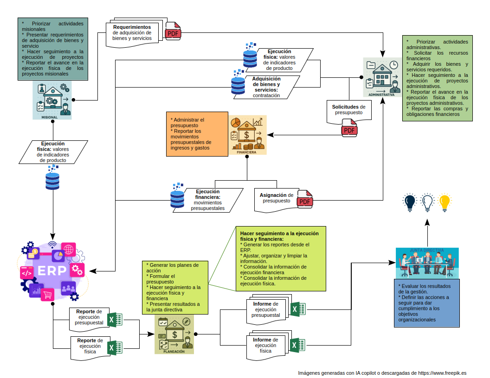
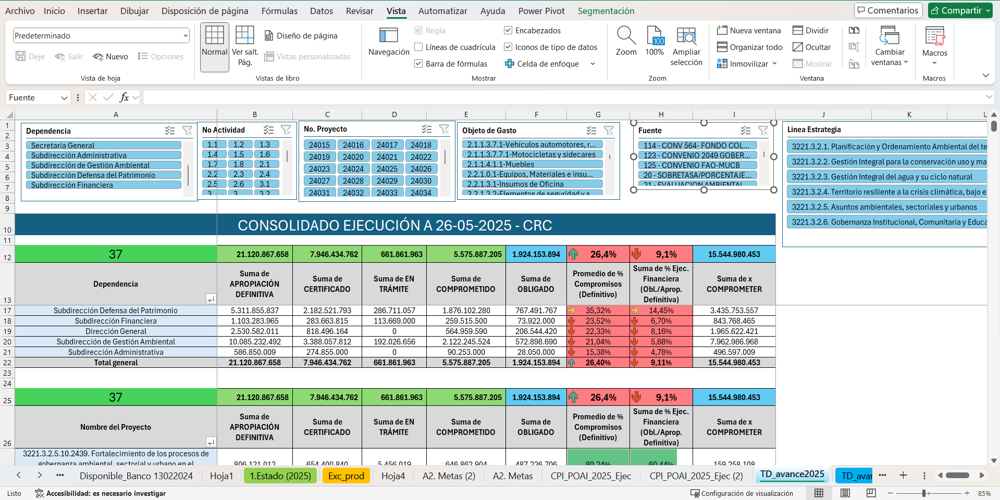
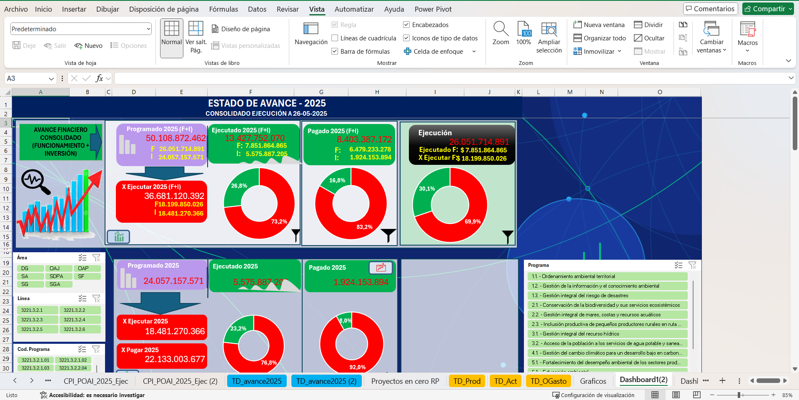
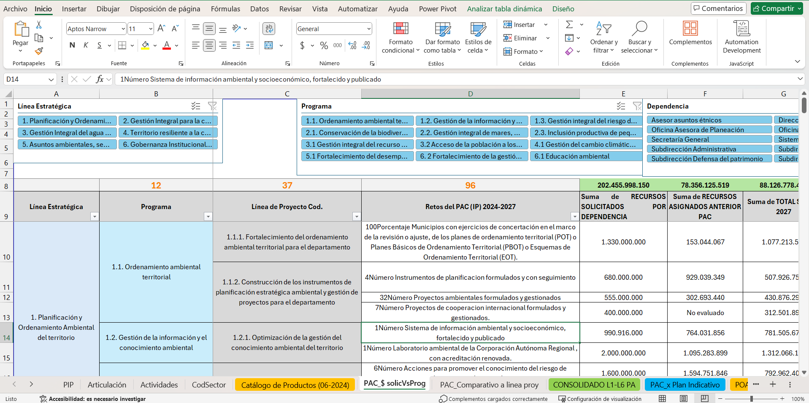
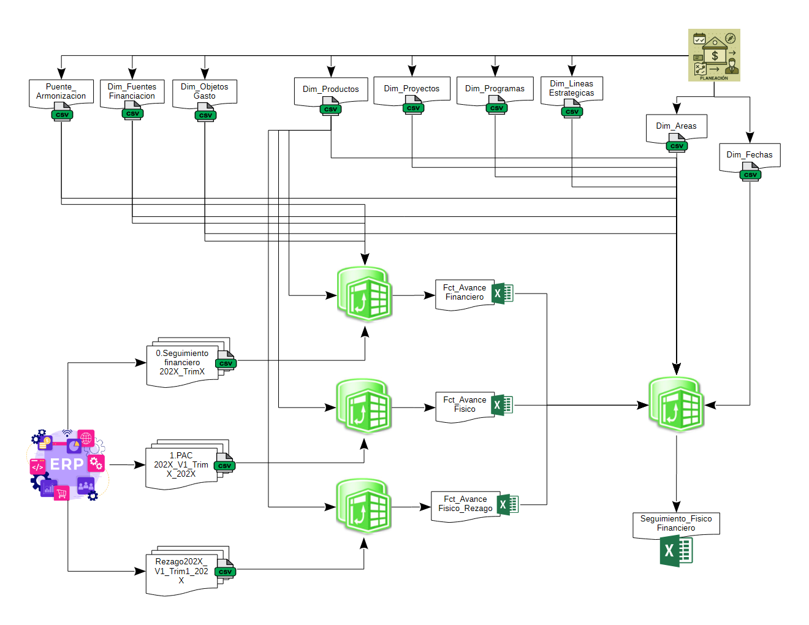

Monitoreo estratégico de la ejecución física y financiera
1. Acerca de la entidad
La entidad estudiada es de carácter público del orden territorial y se dedica a gestionar proyectos ambientales, además de supervisar la labor de otros entes territoriales y de la comunidad dentro de su jurisdicción. Sus periodos administrativos cambian cada 4 años, y en cada uno se formula un plan estratégico ajustado a la capacidad financiera disponible. El Área de Planeación y Proyectos lidera la formulación de este plan, el plan financiero o de inversión, y el seguimiento al cumplimiento del presupuesto y de las metas definidas.
En general, los planes estratégicos suelen organizarse en diferentes niveles como líneas, ejes, programas, subprogramas, proyectos y productos. En el caso de esta entidad, la estructura de su plan se observa así:
- Líneas estratégicas
- Programas
- Proyectos
- Productos
El proceso analizado en este proyecto parte del plan estratégico, que cada año sirve de base para los planes de acción y el presupuesto anual. A partir de allí, cada área responsable ejecuta sus actividades con los recursos asignados. El Área de Planeación y Proyectos se encarga de dar seguimiento al cumplimiento de metas y evaluar el avance en productos, proyectos, programas, líneas estratégicas y áreas responsables.
Existen algunas particularidades en este proceso de seguimiento:
Al inicio de cada periodo administrativo (cuatrienio) se realiza una armonización presupuestal: se ajusta el presupuesto heredado de la administración anterior al nuevo plan estratégico. Aunque se hace una sola vez, es clave para calcular correctamente la ejecución acumulada del plan.
También existe el reporte de avance físico rezagado: se registran metas cumplidas en la vigencia anterior que no pudieron reportarse a tiempo por falta de información o por la dinámica propia de la entidad. Esto puede modificar los resultados presentados al cierre de un año durante los primeros meses del siguiente.
Finalmente, el Área de Planeación y Proyectos debe presentar a la junta directiva los resultados de ejecución, tanto anuales como acumulados. Entre las preguntas que se responden están: ¿cómo va la ejecución del presupuesto?, ¿cómo avanza la inversión y la producción?, ¿qué tanto se ha logrado en los productos?, ¿qué áreas presentan retrasos?, ¿cómo se ve la ejecución a nivel de proyectos y programas?
2. Proceso de seguimiento y evaluación de la ejecución del plan estratégico
2.1 Estado del proceso antes de la intervención
La entidad cuenta con un ERP integral en el que se gestionan los datos generados por los procesos (movimiento operacional), entre ellos la ejecución del presupuesto, la ejecución contractual (adquisición de bienes y servicios), la ejecución de los planes de acción, entre otros. El ERP centraliza la mayor parte de los datos y facilita la generación de reportes que sirven como insumo para productos como los informes a los entes de control, las entidades de gobierno del orden nacional, los informes de gestión institucional presentados a la junta directiva y aquellos que hacen parte de las obligaciones de transparencia y acceso a la información.
Sin embargo, en el caso de los informes de gestión institucional, el procesamiento de datos es manual y se realiza en Excel desde el Área de Planeación y Proyectos. Existen archivos Excel “maestros” que se han venido construyendo y ampliando a medida que se generan más datos y que se requiere nueva información. Estos archivos se alimenta de los reportes generados por el ERP mediante la acción de “copiar” y “pegar” la información actualizada.
Los Excel maestro contiene varias hojas de cálculo con diversa información, relacionadas entre sí a través de referencias. El cálculo de resultados o indicadores se realiza mediante fórmulas por fila y por columna. Para llegar a estos resultados, se hace una limpieza de datos que en algunos casos es manual (buscar y reemplazar) y en otros se apoya en fórmulas como concatenar, extraer, izquierda, derecha, entre otras.
Si bien se logra el objetivo, los archivos Excel maestros resultan complejos debido a la cantidad de hojas y lentos por el número de fórmulas. Además, la visualización de datos es limitada y los resultados se presentan principalmente mediante filtros de tablas (segmentadores o slicers).
El siguiente esquema refleja el proceso actual:

Cabe resaltar que existen dos archivos Excel “maestros”: uno se enfoca en el análisis, seguimiento y evaluación de la gestión presupuestal (informe de ejecución presupuestal), y el otro en la gestión del plan estratégico (Informe de ejecución física), considerando las líneas, programas, proyectos y productos en relación con su avance.
2.1.1 Informe de ejecución presupuestal
El archivo está compuesto por 39 hojas, en las cuales se consolida información presupuestal clave. Incluye datos sobre disponibilidades, compromisos, pagos, asignación de recursos por producto y fuentes de financiación, así como una matriz de avance financiero y un dashboard con detalles del progreso financiero.
Cabe aclarar que algunas hojas no están nombradas explícitamente según su contenido, sino que utilizan títulos abreviados, técnicos o referenciales. Por ejemplo:
- TD_CDPS, N_CDPS, TD_QGasto, TD_Prod, TD_Act
- Disponible_Banco 13022024, Exc_prod, Graficos
- CPI_POAI_2025_Ejec, Proyectos en cero RP, A2. Metas
- Fuentes, 7. Liberar, 1.Estado (2025)
Estas denominaciones reflejan estructuras internas del seguimiento financiero, pero no siempre permiten identificar de forma directa el tipo de información contenida. Por ello, se recomienda complementar el análisis con una tabla de descripción de hojas o un índice temático.




2.1.2 Informe de ejecución física
El archivo está compuesto por 58 hojas, en las cuales se consolida información clave relacionada con la ejecución física de los planes institucionales. Incluye elementos como el catálogo de productos, la matriz estratégica, el plan de acción por vigencia, el plan de inversiones, el plan indicativo (detalle de los indicadores), la programación financiera por vigencia, y la matriz de seguimiento a la ejecución física, entre otros.
Cabe destacar que algunas hojas presentan nombres técnicos o abreviados que no reflejan directamente su contenido temático. Por ejemplo:
- Catálogo de Productos (06-2024)
- PAC_$ solicVsProg, PAC_Comparativo a línea proy, PAC_x Plan Indicativo
- POAI 2024, CPI_POAI_vertical, CPI_POAI_Horz
- PAI 2024-2027, PAI 2024-2027 MinAmb
- PAC_x Fisco Nueva Subdir, PAC_x Retos (SEAPAC)
- Articulación, Actividades, CodSector
Estas denominaciones responden a estructuras internas de planificación, seguimiento y articulación institucional.



2.1.3 Principales Debilidades del modelo actual
El modelo actual presenta diversas limitaciones que afectan la eficiencia, la trazabilidad y la calidad de la información gestionada. Entre las principales debilidades se destacan:
Alta carga de trabajo manual: La actualización de la información en cada archivo Excel requiere una intervención constante, lo que incrementa el riesgo de errores y dificulta la sostenibilidad del sistema.
Duplicidad de información: La creación de hojas separadas para detallar datos por “dimensiones” genera redundancia y fragmentación, complicando el análisis integral.
Complejidad técnica: El uso intensivo de fórmulas internas, su cantidad y variedad, junto con un número considerable de tablas dinámicas, dificulta la comprensión del funcionamiento general de los archivos y limita su mejora colaborativa.
Dependencia del funcionario elaborador: La ausencia de documentación sobre la trazabilidad de elaboración y mantenimiento de los archivos genera una alta dependencia del funcionario que los diseñó, lo que representa un riesgo operativo.
Desconexión entre ejecución física y financiera: No existe una integración entre los documentos que permita relacionar de forma automática la información física y financiera por meta, lo que obliga a construir manualmente los informes consolidados solicitados por la Junta Directiva.
Inconsistencia en los códigos de proyecto: Se utilizan códigos distintos para la ejecución física y la información financiera, lo que dificulta el cruce de datos.
Falta de estandarización: Existen variaciones en la codificación, como el uso inconsistente de puntos finales en los códigos, lo que afecta la uniformidad de los registros.
Dificultad para vincular proyectos con fuentes de financiación: La estructura actual genera columnas por cada fuente de financiación que se repiten en múltiples hojas (por líneas estratégicas, programas, etc.), lo que provoca duplicidad de fuentes (una misma fuente con diferentes códigos).
Problemas de homologación en el catálogo de productos: El catálogo requiere múltiples códigos para traducir la información según los requerimientos de entidades externas, cada una con su propio sistema de codificación. Esto obliga a realizar procesos de homologación manual.
Desalineación con el ERP institucional: Se han identificado archivos Excel paralelos, elaborados para responder a requerimientos de entes externos, que contienen información del avance físico y financiero distinta a la registrada en el ERP. Esta situación compromete la integridad, calidad y oportunidad de los datos utilizados para evaluar la gestión.
Riesgo por actualizaciones parciales: La modificación en el alcance de un producto exige actualizar múltiples variables físicas (meta física, ponderaciones por cuatrienio y vigencia, responsable de ejecución, etc.) y financieras (asignación total, por fuente y por vigencia) en diferentes hojas. Si alguna de estas no se actualiza correctamente, los resultados reportados pueden ser inconsistentes o erróneos.
3. Estado del proceso después de la intervención
Tras el análisis del proceso y la revisión de las diferentes fuentes de datos, se identificó cómo se genera la información desde el ERP. Con base en ello, se diseñó un proceso de transformación de datos semiautomático, utilizando exclusivamente las herramientas disponibles en la entidad —en este caso, Excel—, dado que no existen recursos para adquirir o arrendar servicios adicionales.
La principal necesidad detectada es la integración de la información, es decir, contar con la capacidad de consolidar en un solo informe la ejecución física y la presupuestal. Cabe señalar que la información presupuestal puede generarse de manera diaria, mientras que los reportes de ejecución física se actualizan trimestralmente. Esta diferencia en la periodicidad exige un modelo flexible que permita armonizar ambas fuentes.
Para lograr la mejora se desarrollaron las siguientes etapas:
- Identificación de las fuentes de información
- Clasificación de datos por hechos y dimensiones
- Construcción de tablas de dimensiones
- Transformación de la información presupuestal
- Transformación de la información de ejecución física
- Integración de la información y consolidación del modelo de datos
- Definición de métricas
3.1 Definición del flujo de datos
Una vez comprendido el proceso de transformación de la información y definidos los datos necesarios para elaborar el informe, se diseñó un esquema de flujo de datos teniendo en cuenta las limitaciones de Excel en procesos de transformación extensos. Inicialmente, el procedimiento se centralizó en un único bloque; sin embargo, el rendimiento obtenido no fue el esperado. Por esta razón, se decidió dividir el flujo en dos etapas, lo que permitió optimizar la eficiencia y facilitar el manejo de la información: la primera dedicada a la transformación de las tablas de hechos y la segunda a la integración del modelo de datos con las tablas de hechos y dimensiones.
Cabe destacar que las tablas de dimensiones fueron construidas manualmente y son gestionadas por el Área de Planeación y Proyectos de la misma manera. Por ejemplo, si una meta de producto sufre modificaciones en su alcance o se incorpora un nuevo producto, estos cambios deben ajustarse manualmente en la tabla de dimensión correspondiente.

La vista de diagrama de datos, de la segunda etapa, que proporciona Power Pivot se observa así:

3.1.1 Avance Físico
Para el seguimiento del plan estratégico se definieron cuatro medidas, orientadas a mostrar tanto la ejecución de los productos como la actualización de la información disponible.
| Medida | Detalle |
|---|---|
| Actualizacion | Extrae la fecha de la última actualización de los datos de avance en la ejecución de los productos del plan estratégico. |
| EjecucionGlobal | Suma la ejecución ponderada global de los cuatro años del periodo administrativo en curso, asignando un peso del 25% a cada año. |
| EjecucionPonderadaGlobal | Calcula el porcentaje de ejecución de los productos considerando el peso asignado en el plan estratégico (el peso de cada producto dentro del cuatrienio). El valor incluye los rezagos agregados posteriormente. |
| EjecucionReal | Calcula el porcentaje de ejecución de los productos considerando el peso asignado en la vigencia (el peso de cada producto para un año específico). El valor incluye los rezagos agregados posteriormente. |
El desarrollo de la fórmula de una de las medidas aplicadas al avance físico se muestra a continuación.
EjecucionReal:=
VAR VigenciaMax=
MAX(Fct_AvanceFisico[Vigencia])
VAR FechaMax=
MAX(Fct_AvanceFisico[Fecha_Corte])
RETURN
VAR TablaFiltrada =
FILTER(
Fct_AvanceFisico,
Fct_AvanceFisico[Vigencia] = VigenciaMax &&
INT(Fct_AvanceFisico[Fecha_Corte]) = FechaMax
)
RETURN
DIVIDE(
SUMX(
TablaFiltrada,
VAR Vigencia = Fct_AvanceFisico[Vigencia]
VAR Meta =
SWITCH(
TRUE(),
Vigencia = 2024, RELATED(Dim_Productos[Meta_2024]),
Vigencia = 2025, RELATED(Dim_Productos[Meta_2025]),
Vigencia = 2026, RELATED(Dim_Productos[Meta_2026]),
Vigencia = 2027, RELATED(Dim_Productos[Meta_2027])
)
VAR Avance =
DIVIDE((Fct_AvanceFisico[Avance_Fisico]), Meta, 0)
VAR Ejecucion =
IF(Avance > 1, 1, Avance)
VAR Ponderado =
SWITCH(
TRUE(),
Vigencia = 2024, Fct_AvanceFisico[Pond_2024],
Vigencia = 2025, Fct_AvanceFisico[Pond_2025],
Vigencia = 2026, Fct_AvanceFisico[Pond_2026],
Vigencia = 2027, Fct_AvanceFisico[Pond_2027]
)
RETURN Ejecucion * Ponderado
),
SUMX(
TablaFiltrada,
VAR Vigencia = Fct_AvanceFisico[Vigencia]
VAR Ponderado =
SWITCH(
TRUE(),
Vigencia = 2024, Fct_AvanceFisico[Pond_2024],
Vigencia = 2025, Fct_AvanceFisico[Pond_2025],
Vigencia = 2026, Fct_AvanceFisico[Pond_2026],
Vigencia = 2027, Fct_AvanceFisico[Pond_2027]
)
RETURN Ponderado
),
0
) +
SWITCH(
TRUE(),
VigenciaMax = 2024, [AvanceRezago2024],
VigenciaMax = 2025, [AvanceRezago2025],
VigenciaMax = 2026, [AvanceRezago2026],
VigenciaMax = 2027, [AvanceRezago2027]
)3.1.2 Avance Financiero
En el flujo de datos se definieron inicialmente 27 medidas relacionadas con el avance financiero. Sin embargo, se han identificado oportunidades de mejora que permitirían reducir su número a menos de la mitad, manteniendo la consistencia y precisión en el análisis.
| Medida |
|---|
| Ppto_Inicial |
| Ppto_Tramite |
| Ppto_Definitivo |
| Ppto_Certificado |
| Ppto_Comprometido |
| Ppto_Obligado |
| Ppto_Pagado |
Cada una de estas medidas funciona como la sumatoria de los distintos momentos presupuestales. Los valores se presentan en millones de pesos, por lo que la sumatoria se divide posteriormente entre un millón para mantener una escala adecuada para su análisis.
Inicial: Corresponde a los valores aprobados por la junta directiva como montos financieros asignados para iniciar una vigencia.
Trámite: Representa los valores del presupuesto que están en proceso de modificación del presupuesto inicial (adiciones, reducciones, traslados).
Definitivo: Agrupa el presupuesto inicial junto con las modificaciones aprobadas por la junta directiva.
Certificado: Valores asignados para futuros compromisos financieros. Certifican que existe disponibilidad presupuestal para cubrir adquisiciones de bienes o servicios respaldadas por contratos.
Comprometido: Recursos destinados a respaldar la adquisición de bienes o servicios con soporte contractual.
Obligado: Valores reconocidos como deuda, que deben ser pagados al tercero que suministró bienes o prestó servicios contratados.
Pagado: Valores ya transferidos o girados al tercero proveedor del bien o servicio, previamente reconocidos como obligación.
De las medidas presupuestales previamente definidas se desprenden los cálculos en porcentaje, los cuales permiten analizar la relación de cada momento presupuestal respecto al Ppto_Definitivo:
| Medida |
|---|
| Porc_Tramite |
| Porc_Certificado |
| Porc_Comprometido |
| Porc_Obligado |
Estos porcentajes se calculan en función del Ppto_Definitivo, lo que asegura consistencia en la comparación de los distintos momentos presupuestales.
El siguiente grupo de medidas mantiene la misma lógica, pero se limita exclusivamente a la información presupuestal de la vigencia en curso (VA):
| Medida |
|---|
| Ppto_Inicial_VA |
| Ppto_Tramite_VA |
| Ppto_Definitivo_VA |
| Ppto_Certificado_VA |
| Ppto_Comprometido_VA |
| Ppto_Obligado_VA |
| Ppto_Pagado_VA |
| Porc_Tramite_VA |
| Porc_Certificado_VA |
| Porc_Comprometido_VA |
| Porc_Obligado_VA |
Finalmente, se cuenta con un conjunto de medidas que funcionan de manera transversal dentro del modelo. En varios casos se utilizan más como variables de apoyo para el cálculo de otras medidas, aportando consistencia y precisión en los resultados.
| Medida | Detalle |
|---|---|
| EsperadoEjecutado | Calcula el valor de ejecución presupuestal que debería llevar la entidad hasta el mes finalizado en la vigencia actual |
| Porc_Ejec_Esperado | Calcula el porcentaje del presupuesto ejecutado (obligación) en función de EsperadoEjecutado. |
| FechaMaxFin | Extrae la fecha de la última actualización de los datos de ejecución presupuestal. |
| MesVencido | Extrae el último mes de la vigencia que ya culminó; se utiliza como variable necesaria para calcular EsperadoEjecutado. |
| VigenciaActFin | Extrae el año de la actualización más reciente de los datos de ejecución presupuestal. |
El desarrollo de la fórmula de unas de las medidas aplicadas al avance financiero se muestra a continuación.
Ppto_Definitivo:=
DIVIDE(
sum(
Fct_AvanceFinanciero[2_Apropiado_Final]),
1000000,
0)Ppto_Definitivo_VA:=
VAR FechaMax = [FechaMaxFin]
VAR VigenciaActual = [VigenciaActFin]
VAR TablaFiltrada =
FILTER(
Fct_AvanceFinanciero,
Fct_AvanceFinanciero[Vigencia] = VigenciaActual &&
INT(Fct_AvanceFinanciero[Fecha_Corte]) = FechaMax
)
RETURN
SUMX(
TablaFiltrada,
[Ppto_Definitivo]
)EsperadoEjecutado:=
DIVIDE(
[Ppto_Definitivo_VA],
12,
0)
*
[MesVencido]3.1.3 Avance Físico Rezagado
Como parte del seguimiento al plan estratégico, es necesario incluir los reportes de avance de productos generados una vez finalizada cada vigencia. En la vigencia actual se reporta la ejecución de los productos logrados en la vigencia anterior, los cuales deben registrarse como avances de la vigencia presente y no de aquella en la que se produce el reporte.
En el caso de la ejecución rezagada, se definen dos grupos de medidas
- Medidas asociadas a la ponderación de cada producto en la vigencia (EjecucionReal):
| Medida |
|---|
| AvanceRezago2024 |
| AvanceRezago2025 |
| AvanceRezago2026 |
| AvanceRezago2027 |
Estas medidas calculan el aporte de los avances rezagados frente a los ponderados de cada vigencia y se integran en el cálculo de la medida EjecucionReal.
- Medidas asociadas a la ponderación del producto en el cuatrienio (EjecucionPonderadaGlobal):
| Medida |
|---|
| AvanceRezago2024_PondCuatrienio |
| AvanceRezago2025_PondCuatrienio |
| AvanceRezago2026_PondCuatrienio |
| AvanceRezago2027_PondCuatrienio |
Este grupo de medidas incorpora los avances rezagados considerando los ponderados del cuatrienio, para que sean incluidos en el cálculo de la medida EjecucionPonderadaGlobal.
Es importante tener en cuenta que los ponderados de producto por vigencia no necesariamente coinciden con los ponderados del cuatrienio. Esto ocurre porque existen metas que no se programan en las cuatro vigencias. Cuando un producto no se programa en una vigencia, su ponderación es cero y no se incluye en el cálculo de EjecucionReal de esa vigencia; además, la meta considerada es únicamente la de ese periodo. En cambio, en el cálculo de EjecucionPonderadaGlobal, la meta del producto sí se tiene en cuenta, aunque no haya sido programada en una vigencia específica, ya que se evalúa con base en la meta total del cuatrienio.
El desarrollo de la fórmula de unas de las medidas aplicadas al avance físico de rezago se muestra a continuación.
AvanceRezago2024:=
VAR VigenciaMax=2024
VAR FechaMax=
MAX(Fct_AvanceFisico_Rezago[Corte_Reporte])
RETURN
VAR TablaFiltrada =
FILTER(
Fct_AvanceFisico_Rezago,
YEAR(Fct_AvanceFisico_Rezago[Corte_Rezago]) = VigenciaMax
&&
INT(Fct_AvanceFisico_Rezago[Corte_Reporte]) = FechaMax
)
RETURN
DIVIDE(
SUMX(
TablaFiltrada,
VAR Vigencia = 2024
VAR Meta =
RELATED(Dim_Productos[Meta_2024])
VAR AvanceRes =
DIVIDE((Fct_AvanceFisico_Rezago[Avance_Rezago]), Meta, 0)
VAR Ejecucion =
IF(AvanceRes > 1, 1, AvanceRes)
VAR Ponderado =
Fct_AvanceFisico_Rezago[Pond_2024]
RETURN Ejecucion * Ponderado
),
SUMX(
TablaFiltrada,
VAR Vigencia = YEAR(Fct_AvanceFisico_Rezago[Corte_Rezago])
VAR Ponderado = Fct_AvanceFisico_Rezago[Pond_2024]
RETURN Ponderado
),
0
)AvanceRezago2024_PondCuatrienio:=
VAR VigenciaMax=2024
VAR FechaMax=
MAX(Fct_AvanceFisico_Rezago[Corte_Reporte])
RETURN
VAR TablaFiltrada =
FILTER(
Fct_AvanceFisico_Rezago,
YEAR(Fct_AvanceFisico_Rezago[Corte_Rezago]) = VigenciaMax
&&
INT(Fct_AvanceFisico_Rezago[Corte_Reporte]) = FechaMax
)
RETURN
DIVIDE(
SUMX(
TablaFiltrada,
VAR Vigencia = 2024
VAR Meta =
RELATED(Dim_Productos[Meta_2024])
VAR AvanceRes =
DIVIDE((Fct_AvanceFisico_Rezago[Avance_Rezago]), Meta, 0)
VAR Ejecucion =
IF(AvanceRes > 1, 1, AvanceRes)
VAR Ponderado =
Fct_AvanceFisico_Rezago[Pond_Cuatrienio]
RETURN Ejecucion * Ponderado
),
SUMX(
TablaFiltrada,
VAR Vigencia = YEAR(Fct_AvanceFisico_Rezago[Corte_Rezago])
VAR Ponderado = Fct_AvanceFisico_Rezago[Pond_Cuatrienio]
RETURN Ponderado
),
0
)4. Conclusiones Generales
La implementación del nuevo proceso de gestión de información presupuestal y física del plan estratégico ha mejorado significativamente la capacidad de la entidad para compartir resultados de manera más sencilla, facilitar la administración de datos y mantener la información actualizada al ritmo de los reportes generados desde el ERP.
Aunque aún existe una parte del proceso que se gestiona de forma manual —debido a las limitaciones del ERP, que no permite la conexión directa con Excel para consultas automáticas—, el orden alcanzado hace que el sistema sea más fácil de administrar y abre dos nuevas posibilidades para la entidad:
Fortalecer el ERP mediante el desarrollo de herramientas de visualización basadas en el flujo de datos estructurado en este proyecto. El proveedor del ERP ha manifestado interés en avanzar en este tipo de mejoras, lo que representa una oportunidad estratégica.
Implementar visualización y storytelling en Power BI para la ejecución presupuestal y física del plan estratégico. Aunque la entidad no cuenta con una suscripción corporativa ni ha asignado recursos específicos, el uso de la versión gratuita puede ser un punto de partida para impulsar decisiones estratégicas más informadas.
Los avances logrados hasta ahora facilitan la adopción de cualquiera de estas dos alternativas.
4.1 Oportunidades de mejora
Complementar las medidas con niveles de aceptación, de manera que se construyan KPIs completos y más representativos.
Simplificar algunas medidas, dado que el modelo actual ya satisface las necesidades de la junta directiva y la gerencia, pero podría optimizarse para reducir complejidad sin perder valor informativo.
Explorar alternativas de escalabilidad y acceso, como el uso de Python para procesos de transformación y visualización. Esto permitiría aprovechar herramientas gratuitas y la infraestructura física disponible en la entidad, ampliando el alcance del modelo hacia todos los niveles organizacionales.